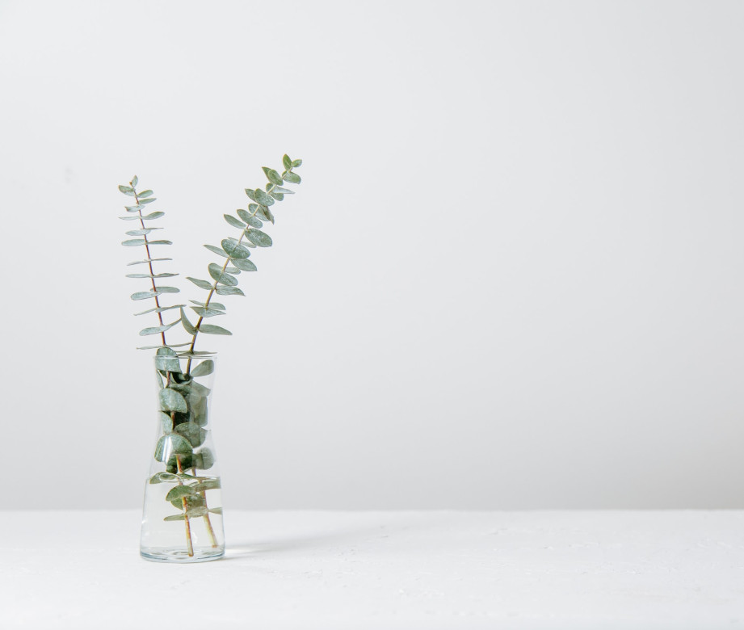

Лёгкая и простая карусель для демонстрации ваших работ
Скачать на GitHub
Винтажная пишущая машинка
Винтаж
276
14
Сухая ветка на солнце
Минимализм
368
21
Ваза на столе
Цветы
122
19
Колесо обозрения
Архитектура
201
23
Птица сидит на ветке
Природа
188
17
Серые дверные проёмы
Архитектура
230
25

Элемент декора для дома
Минимализм
302
38
Минимализм в архитектуре
Архитектура
180
16